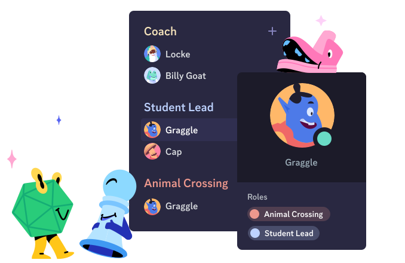

Crie um espaço controlado por convite onde você se sinta em casa
Os servidores Discord são organizados em canais com assuntos para vocês colaborarem, compartilharem ou simplesmente falarem do dia sem entupir um chat geral.

Aqui é fácil se encontrar
Entre no canal de voz quando estiver à toa. Amigos no mesmo servidor podem te ver e entrar imediatamente, sem nem ter que fazer a chamada.

Para poucos e para muitos
Organize qualquer comunidade com ferramentas de moderação e acesso personalizado a membros. Dê poderes especiais aos membros, monte canais privados e muito mais.
TECNOLOGIA DE CONEXÃO CONFIÁVEL
Voz e vídeo de baixa latência, para você conversar como se estivesse na mesma sala. Dê um joinha por vídeo, veja amigos transmitirem a jogatina do dia ou junte uma galera pra desenhar na tela compartilhada.